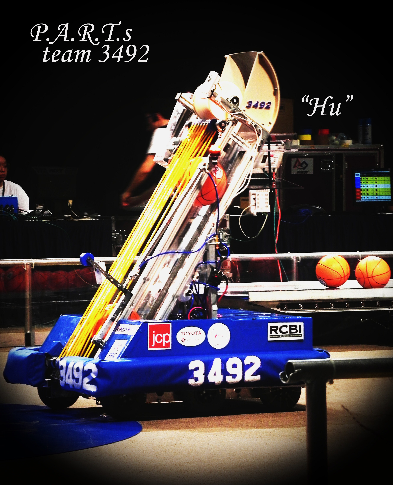
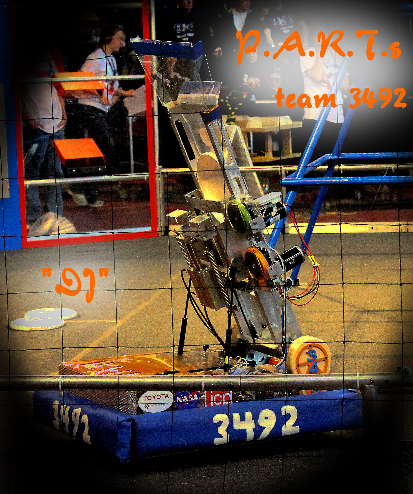
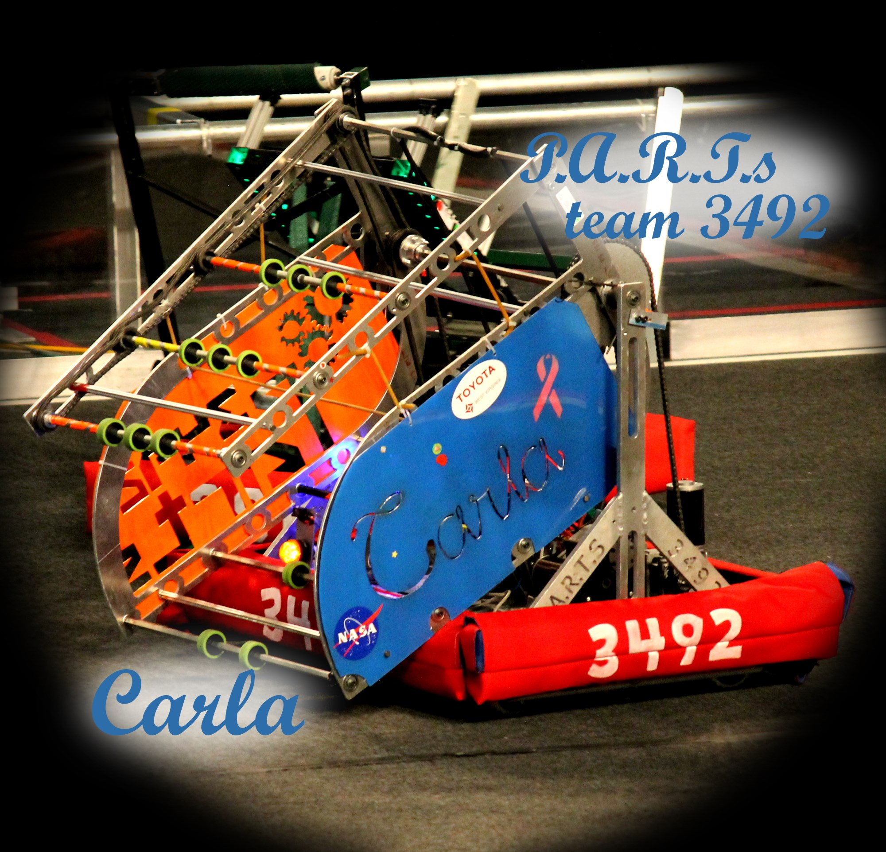
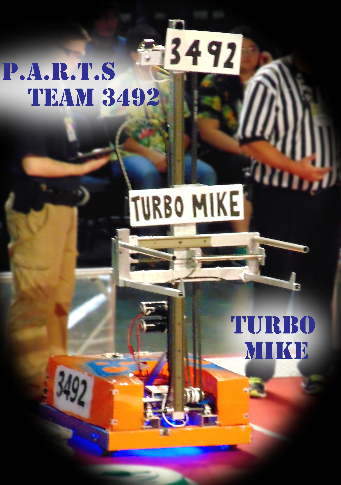
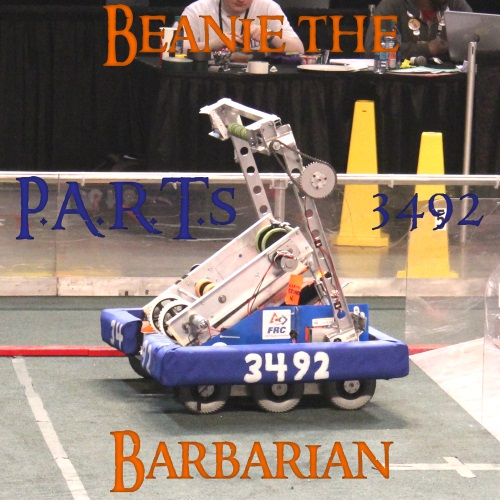

Jump to Year |
2011 |
2012 |
2013 |
2014 |
2015 |
2016 |
P.A.R.T.s History

|
A Brief History...P.A.R.T.s, formerly known as RoboGens, began its career as a robotics team in 2010 when a Winfield High School senior, Taylor Shank, attended a Mountaineer Area RoboticS (MARS) event. Awed and inspired, Taylor moved to create a team at his school. Denise Johnson, a teacher at the school, took up the opportunity as the sponsor, and the team RoboGens was born. It was originally called this because Winfield High School is the home of the Winfield Generals, and we wanted to pay a tribute to the school. Now...P.A.R.T.s is a team of high school students from all over Putnam County who come together to build robots and promote S.T.E.M. Awards and Accomplishments
|

|
2011"McCoy", named in honor of one of the most respected faculty members at Winfield High, Coach Leon McCoy, was our first robot designed to play the 2011 game LOGO MOTION. He was designed as a defensive bot who had an attachment on the back to launch a "mini bot" up a pole, a crucial part of the game. LOGO MOTION is played by two competing alliances on a flat 27' x 54' ft field. Each alliance consists of three robots. They compete to hang as many inflated plastic shapes (triangles, circles, and squares) on their grids as they can during a 2 minute and 15 second match. The higher the teams hang their game pieces on their scoring grid, the more points their alliance receives. The match ends with robots deploying minibots, small electro-mechanical assemblies that are independent of the host robot, onto vertical poles. The minibots race to the top of the pole to trigger a sensor and earn additional bonus points. McCoy competed in the 2011 Pittsburgh Regional. There we were ranked 38 out of 39 teams. We went on to be selected by the 1st alliance consisting of teams 1114 (Simbotics) and 1503(Spartonics). We went all the way through finals and won the regional, qualifying us for the world championship. We competed in the World-Wide championship in St. Louis, MO. We finished 61 out of 88 in our division. |
|  |
2012"HU", named after Winfield High School's beloved principal William Hughes, was our second robot designed to play the 2012 game REBOUND RUMBLE. He was designed with a long channel that took in balls at the bottom to launch them out the top. There was also an attachment on his back that allowed him to tilt a bridge toward him so he could balance it (this was an important part of the game). REBOUND RUMBLE is played by two competing alliances on a flat, 27' x 54' ft field. Each alliance consists of three robots. They compete to score as many basketballs into their hoops as they can during a 2 minute and 15 second match. The higher the hoop in which the basketball is scored, the more points the alliance receives. The match ends with robots attempting to balance on bridges located at the middle of the field. HU competed in two competitions, the 2012 Pittsburgh Regional and Queen City Regional. At Pittsburgh we were ranked 26 out of 45. We went on to be selected by the 4th alliance consisting of teams 1533 (Triple Strange) and 3138 (Innovators Robotics). We played with them through semifinals where we were eliminated. At the Queen City we were ranked 17 out of 57. We went on to be selected by the 1st alliance consisting of teams 3138(Innovator Robotics) and 1730(Team Driven). We played with them and were eliminated in quarterfinals. |
|  |
2013"DJ", named after our amazing and inspiring mentor Denise Johnson who was retiring this year, was our third robot designed to play the 2013 game ULTIMATE ASCENT. She was designed to take in frisbees at the top and shoot them out of a channel just below it. Then she could lift her arm up to hook onto a pyramid and pull herself an inch completely off of the ground (an end game challenge). ULTIMATE ASCENT is played by two competing alliances on a flat, 27' x 54' ft field. Each alliance consists of three robots. They compete to score as many discs into their goals as they can during a two (2)-minute and fifteen (15)-second match. The higher the goal in which the disc is scored, the more points the alliance receives. The match ends with robots attempting to climb on pyramids located near the middle of the field. The robot earns points based on how high it climbs. DJ competed in two competitions, the 2013 Pittsburgh Regional and Cross Roads Regional. At Pittsburgh we were ranked 13 out of 45. We went on to be selected by the 6th alliance consisting of teams 291(CIA-Creativity In Action) and 4601(Circuit Birds). We played in quarterfinals and were eliminated. At Cross Roads we were ranked 16 out of 50. We went on to be selected by the 2nd alliance consisting of teams 930(Mukwonago BEARs) and 1501(Team THRUST). We played in quarterfinals and were eliminated. |
|  |
2014"Carla", named after a beloved team mother who lost her battle to breast cancer, was our fourth robot designed to play the 2014 game AERIAL ASSIST. She was designed to both intake and shoot balls out of her large "mouth". AERIAL ASSIST is played by two competing Alliances of three Robots each on a flat 25' x 54' ft field, straddled by a lighting truss suspended just over five feet above the floor. The objective is to score as many balls in goals as possible during a 2 minute and 30 second match. The more Alliances score their ball in their goals, and the more they work together to do it, the more points their alliance receives. Alliances receive large bonuses for "assists," which are earned for each robot that has possession of the ball in a zone as the ball moves down the field. Carla competed in the 2014 Smoky Mountains Regional. There we were ranked 10 out of 49. As different captains in the top 8 ranks picked each other we moved up to be the 8th seed. That meant that we were the captain of the 8th alliance. We picked teams 281(EnTech GreenVillans) and 342(Burning Magnetos). We played through semifinals where we were eliminated. Even though we did not win the regional we did win the Reginal Engineering Inspiration Award which "Celebrates outstanding success in advancing respect and appreciation for engineering within a team's school and community." This qualified us for the world championship. At Worlds we competed in our division. We finished ranking 32 out of 100. |
|  |
2015"Turbo Mike", named after an original team member and mentor nicked named as such, was our fifth robot designed to play the 2015 game RECYCLE RUSH. He was designed with arms and an elevator to pick up and stack totes. Also at Worlds we added on arms in the back of the robot allowing us to, as it was later nicknamed, "canburgle" cans from the center of the field. RECYCLE RUSH is a recycling-themed game designed for the 2015 FIRST Robotics Competition (FRC). It is played by two Alliances of three teams each. Alliances compete simultaneously to score points by stacking Totes on Scoring Platforms, capping those stacks with Recycling Containers, and properly disposing of Litter, represented by pool noodles, in designated locations. The 27' x 54' ft playing Field is bisected by a small Step which may not be climbed on or crossed by Robots. Thus each Alliance competes on their respective 26' x 27' ft side of the Field. Turbo Mike competed in the 2015 Smoky Mountains Regional. There we were ranked 22 out of 51. We went on to be selected by the 1st alliance consisting of teams 3824(HVA RoHAWKtics) and 2614(MARS). We competed through finals where we won the competition qualifying us for the world competition. At Worlds we competed in our division. We finished ranking 62 out of 76. |
|  |
2016"Beanie the Barbarian", named after our team mascot "BeanieBot" and this year's game, was our sixth robot designed to play the 2016 game FIRST STRONGHOLD. He was designed with a shooting mechanism in the center to make top goals, and an arm on the back to get trough defenses. It is also out first robot to use vision processing, the camera with the blue ring, to find goals, line up, and make a shot. FIRST STRONGHOLD is played on a 27' x 54' field. Each alliance commands one tower, five defenses, and a 'secret passage' which allows their robots to restock on ammunition, called boulders. One defense in each alliance's set of five, the low bar, is a permanent part of the field. Three defenses are selected strategically by the alliance prior to the start of their match. The final defense changes periodically by audience selection. During the 2 minutes and 15 second match, robots are controlled by student drivers from behind their castle wall at the end of the field. Teams on an alliance work together to cross defenses, weaken the opposing tower by scoring boulders in it, and finally surround, scale and capture the tower. Beanie the Barbarian competed in the 2016 Queen City Regional, in Cincinnati, OH. There we were ranked 34 out of 56. Although we did not get selected for an alliance, we cheered for our friends form Logan, WV team 337 (Hard Working Hard Hats) who played hard in their final matches. |